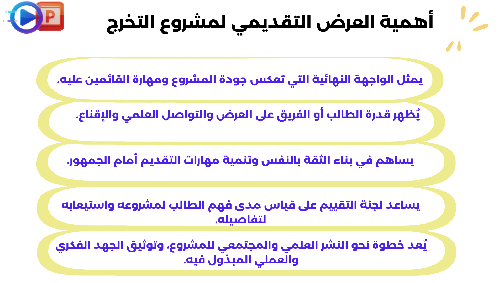

الفيديو التعريفي للموديول السادس
يمكنك مشاهدته من خلال النقر علي الأفاتار
إنتاج مشروع التخرج بشكله النهائي.
بعد الانتهاء من دراسة هذا الموديول يجب أن يكون طالب تكنولوجيا التعليم قادراً على أن:
1. يُعد المشروع للتسليم النهائي وفق التعليمات
2. يُقدم مشروعه أمام لجنة أو زملاء
3. يُعد وثائق التسليم النهائية
2. يُقدم مشروعه أمام لجنة أو زملاء
3. يُعد وثائق التسليم النهائية
بعد استكمال الموديولات السابقة، تأتي المرحلة الأخيرة من مشروع التخرج، وهي مرحلة تسلسل المشروع وتقييمه، لضمان توافق النتائج مع الأهداف التعليمية وتحقيق المعايير المطلوبة.
1. المرحلة الأولى: متطلبات تسليم مشروع التخرج
هي مجموعة من الشروط والإجراءات التي يجب على الطالب الالتزام بها عند الانتهاء من تنفيذ مشروعه، لتقديمه بشكل رسمي إلى الجهة التعليمية للمراجعة والتقييم. وتشمل هذه المتطلبات الشكلية والمحتوى، والمرفقات، وطريقة التسليم، والموعد الزمني المحدد.
🔹متطلبات تسليم مشروع التخرج:
أولًا: الالتزام بالنموذج الرسمي
- تقديم المشروع وفق الدليل أو القالب الموحد.
- يشمل ترتيب الفصول، التنسيق، نوع الخط وحجمه.
- مثال: خط "Simplified Arabic" حجم 14 ومسافة 1.5.
ثانيًا: مكونات التقرير النهائي
- صفحة الغلاف، الإهداء والشكر.
- الملخص (عربي/إنجليزي) + الفهرس.
- المقدمة، الأهداف، المنهجية، النتائج، التوصيات.
- المراجع والملاحق.
ثالثًا: النسخة الإلكترونية والورقية
- نسخة ورقية مطبوعة ومجلدة.
- نسخة إلكترونية (PDF أو Word).
- قد تحتوي روابط لمنتجات رقمية (تطبيق، موقع، فيديو).
رابعًا: مطابقة الأهداف التعليمية
- إظهار تحقيق الأهداف التعليمية المحددة مسبقًا.
- مثال: تنمية مهارات التصميم التعليمي أو توظيف التقنية.
- إضافة جدول يربط المخرجات بالأهداف.
خامسًا: الالتزام بالموعد النهائي
- التسليم خلال فترة التقييم الرسمي.
- التأخير يؤدي إلى خصم درجات أو رفض المشروع.
- عمل جدول زمني لتسليم الأجزاء.
سادسًا: تعهّد الأصالة
- توقيع الطالب أن المشروع عمله الخاص.
- يعزز الأمانة العلمية ويجنب عقوبات الانتحال.
أمثلة تطبيقية
• في مشاريع البرمجة، يُطلب تضمين كود المصدر وتوثيق طريقة التشغيل.
• في مشاريع تكنولوجيا التعليم، يُطلب تضمين النسخة التفاعلية من المنتج (موقع – لعبة – تطبيق) مرفقة مع دليل مشروع التخرج .
2. المرحلة الثانية: العرض التقديمي لمشروع التخرج
(PowerPoint / Canva / Prezi)
عرض مشروع التخرج المرحلة التي يقوم فيها الطالب أو فريق العمل بتقديم مشروع التخرج أمام لجنة التقييم أو الجمهور، بهدف شرح الفكرة والأهداف، واستعراض خطوات التنفيذ والنتائج والتقنيات المستخدمة، وذلك بأسلوب علمي ومنظم يُبرز قيمة المشروع وجودة مخرجاته.
🔹من خلال الفيديو التالي يمكنك تقديم العرض التقديمي لمشروع التخرج بطريقة جيدة:

🔹 أهمية العرض التقديمي لمشروع التخرج :
🔹مكونات العرض التقديمي لمشروع التخرج:
المقدمة التعريفية
اسم المشروع – الفريق – المشرف – خلفية مختصرة عن المشكلة وأهميتها.
أهداف المشروع
توضيح الأهداف التعليمية أو التقنية وما يسعى المشروع لتحقيقه.
فكرة المشروع
الفكرة الرئيسية، خطوات المعالجة، الأدوات والتقنيات المستخدمة.
خطوات التنفيذ
الجدول الزمني، العقبات، التحديات، والحلول.
النتائج
المنتجات النهائية وإبراز القيمة العلمية أو العملية.
التقييم
التحقق من الجودة + التغذية الراجعة.
الخاتمة
تلخيص سريع + شكر للمشرفين والداعمين.
العناصر الداعمة
فيديو، إنفوجراف، أو عرض مباشر للمنتج.
🔹 إرشادات لعرض مشروع التخرج جيد:
التحضير والتدريب
جهز العرض مسبقًا وتدرّب على تقديمه بوضوح وثقة.
إدارة الوقت
الالتزام بالمدة المحددة (7–10 دقائق).
تنظيم الشرائح
شرائح مختصرة، جذابة، وتعتمد على الصور والإنفوجرافيك.
اللغة وأسلوب العرض
استخدم لغة واضحة وتحكم في نبرة الصوت ولغة الجسد.
إبراز القيمة
قدم أمثلة حقيقية من المشروع لعرض أهميته.
التفاعل مع اللجنة
أجب على الأسئلة والملاحظات بثقة وهدوء.
تقسيم الأدوار
في العرض الجماعي وزّع الأدوار بشكل منظم.
3. المرحلة الثالثة : تسليم وثائق مشروع التخرج
هي مجموعة من الملفات والمستندات الرسمية التي يجب أن يُسلّمها الطالب (أو الفريق) في نهاية مشروع التخرج، لتوثيق جميع جوانب المشروع من البداية للنهاية، وتشمل هذه الوثائق الجوانب الفنية، الأكاديمية، والإدارية، وتُستخدم لتقييم الجهد وجودة العمل.

تقرير المشروع النهائي
وثيقة مكتوبة توضح كل تفاصيل المشروع بدءًا من الفكرة حتى التنفيذ، وتُعد المرجع الأساسي للمشروع.
- صفحة الغلاف (العنوان، الفريق، الكلية، المشرف، السنة الدراسية)
- مقدمة عن المشروع ومشكلة المشروع
- الأهداف، وخطة العمل، ولمراحل
- الأدوات والتقنيات المستخدمة
- النتائج والتوصيات والمقترحات
- الملاحق (صور، جداول، أكواد، استبيانات... )
الكود البرمجي أو المنتج النهائي
الملف الرقمي الذي يحتوي على التطبيق أو الموقع أو النموذج المصمم في المشروع.
- يسلم عبر USB أو رابط Google Drive / GitHub
- يجب تنظيم الملفات بشكل يسهل فتحها وتشغيلها
- يُرفق معه ملف README أو إرشادات الاستخدام
دليل المستخدم
وثيقة بسيطة تُوضح كيفية استخدام المنتج النهائي، سواء كان موقعًا أو تطبيقًا أو نظامًا.
- خطوات التشغيل
- واجهات الاستخدام مع شرحها
- أمثلة على إدخال البيانات والحصول على النتائج
الهدف: تسهيل تجربة لجنة التقييم أو أي مستخدم آخر لفهم كيفية استخدام المنتج.
عرض الشرائح التقديمي
نسخة من العرض الذي تم تقديمه يوم المناقشة أمام اللجنة.
- اسم المشروع وأعضاء الفريق
- فكرة المشروع والمشكلة
- خطة التنفيذ والمراحل
- عرض المنتج النهائي (صور أو فيديو قصير)
- التوصيات والخاتمة
تنسيق الشرائح: مختصر – واضح – بصري أكثر من كونه نصي، و يُفضل استخدام أدوات مثل PowerPoint أو Canva.
.png)
بعد الإنتهاء من تلك الخطوات يكون مشروع التخرج الخاص بك كاملاً.
يمكنك أداء اختبار الموديول السادس:
اضغط هنا لبدء الاختبار✅ أجب عن أسئلة الاختبار البعدي للمحتوي التعليمي
الاختبار البعدي لمشروعات التخرج